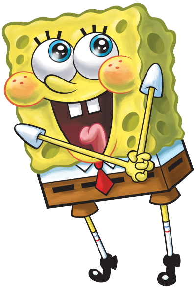 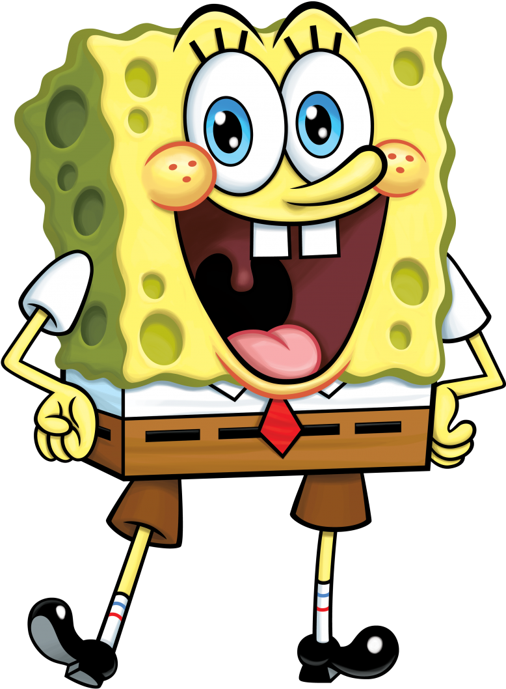
Flappy Bob
Flappy Bob, um jogo modificado por Estudantes do SENAI SC
Inicialização: Ao início do jogo, aparecerá uma tela explicando o objetivo do jogo, como jogar, o que não se deve fazer para que não perca e a quantidade de pontos que você precisa para vencer!
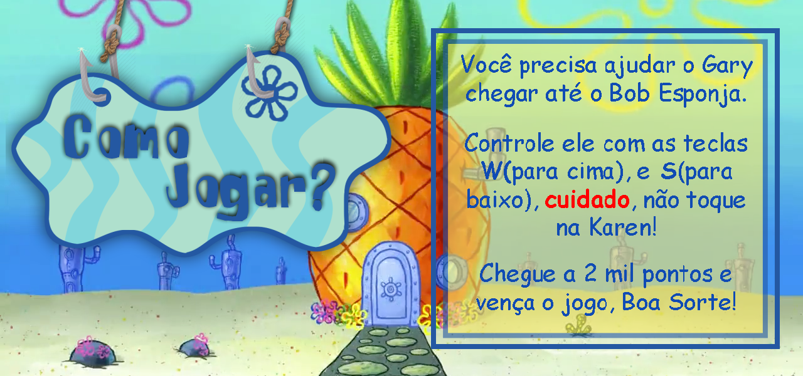Como tudo aparece? Os códigos a seguir foram os utilizados para aparecer os personagens(Gary e Karen), e as imagens utilizadas no jogo e os sons.
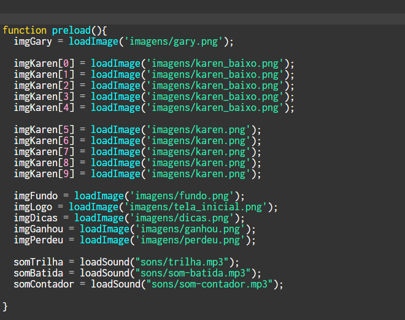Tela de Jogo: Nesta imagem é possível ver como é dentro de jogo, o seu personagem, Gary, e os obstáculos, Karen, percebe-se também o plano de fundo, neste cenário será decidido se você ajudará Gary no seu objetivo ou não.
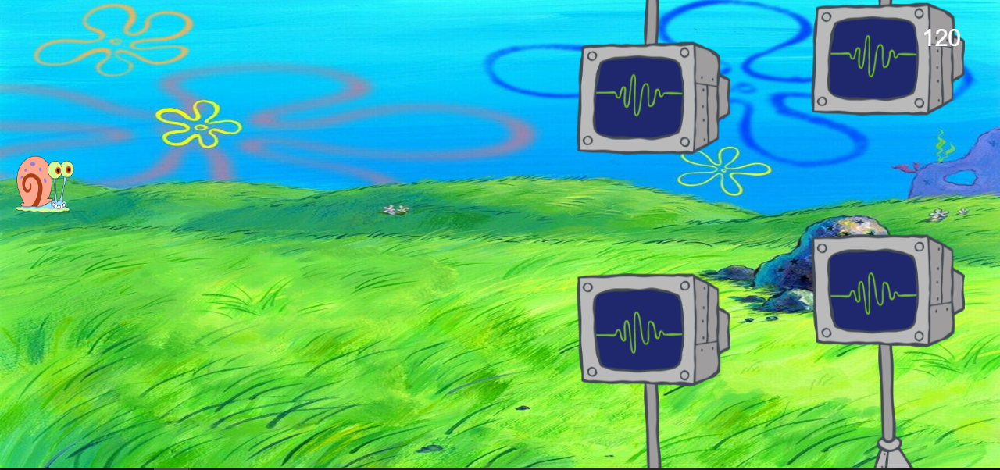Quando você Ganha? Se você finalizar o jogo com sucesso, atingindo os 2 mil pontos, aparecerá uma tela de vencedor, parabenizando-o pela sua conquista, finalizando assim o jogo de forma feliz.
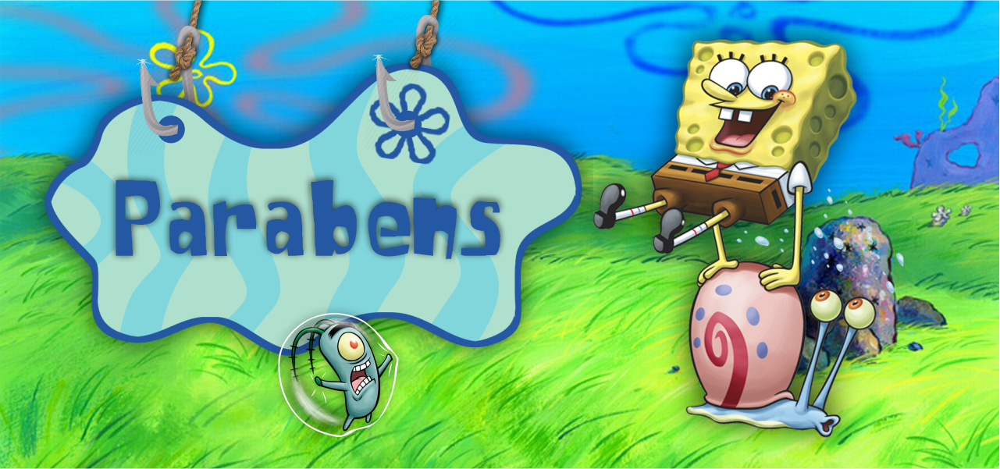Quando você Perde: Diferente de quando você ganha, se por um acaso você tocar nos obstáculos do jogo, aparecerá uma tela de "Game Over" indicando que você fracassou em sua missão e o Plankton venceu, finalizando o jogo de forma triste.
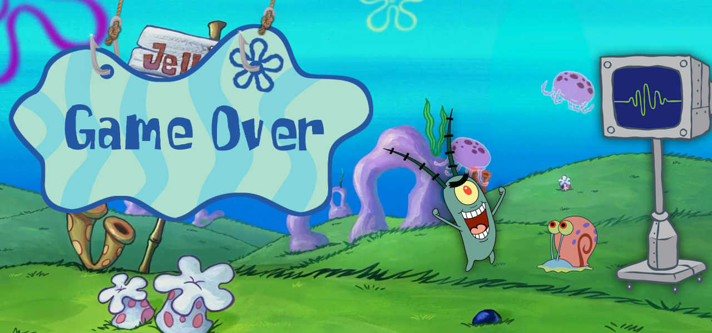Como faz para Perder? A forma de perder no jogo é simples, caso atinja algum dos obstáculos do jogo, você perde!
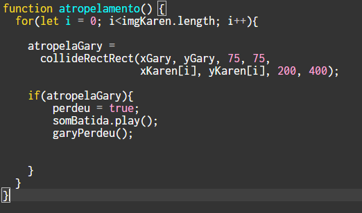Função Jogar: Essa função é uma das mais importantes, pois controla praticamente o jogo inteiro, faz aparecer os personagens e o movimento dos mesmos, aparecer o placar e a adição de pontos, além da colisão e da verificação de vencedor.
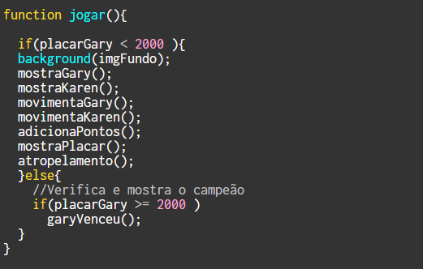Como o Gary se move? A função "movimentaGary" é a responsável pela movimentação do Gary, não é nada muito complexo, um simples código que ao apertar a tecla "W" ele vai para cima e ao apertar a tecla "S" ele vai para baixo.
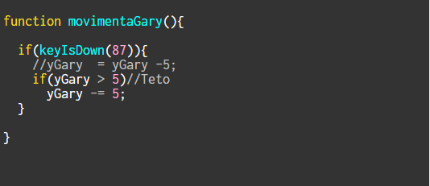Karen também se movimenta! A função abaixo é usada para movimentar a Karen, esse código é um pouco mais complexo que o outro pois temos no jogo 10 Karens, inicialmente criamos um código para cada uma dela, mas tivemos que mudar depois para variáveis, fazendo assim, que a colisão com o Gary funcionasse e que elas pudessem estar sempre em sincronia.
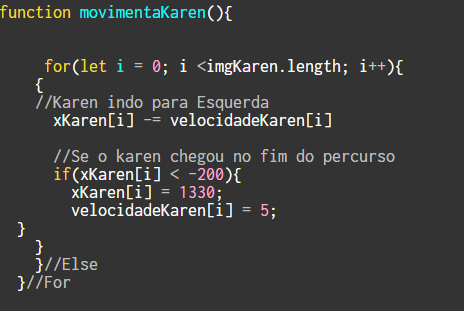Como é adicionado ponto? Os pontos são adicionados pelo "x" do Gary, já que é sempre o mesmo, ele só move o "y", adicionamos 1 ponto ao placar sempre que o "x" do Gary for 20. Se a pessoa alcançar 2 mil pontos a função "GaryVenceu" é chamada e você vence, caso contrário, se você bater, a função "garyPerdeu" é chamada e você perde.
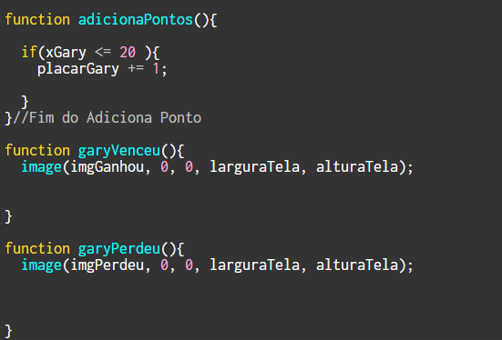Criado por: Davi Gustavo, Felipe Cavichioli, Marcelo Hillesheim e Vinícius de Souza.
SENAI - Brusque/SC - 2019